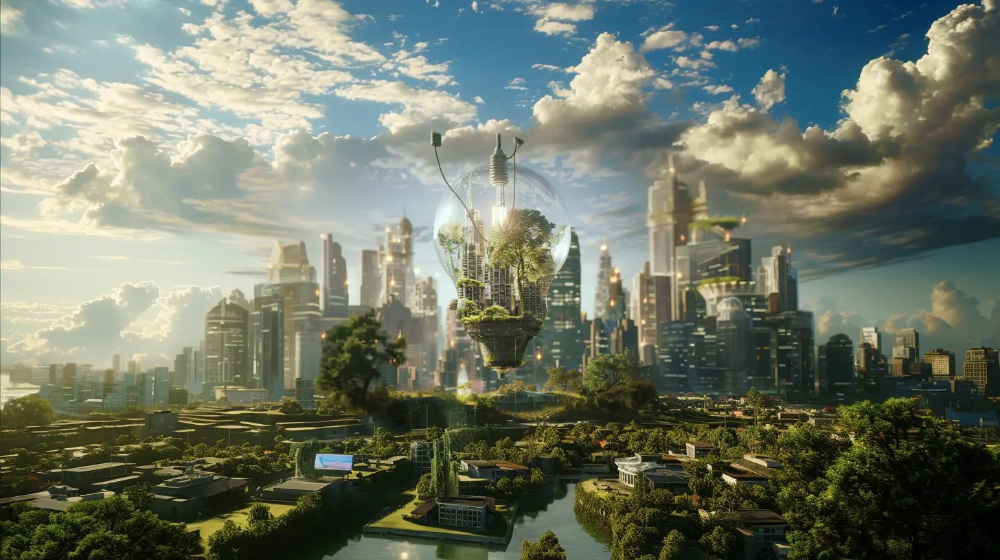

Elemento: guiding sustainable innovation and quality education
We are driving sustainable innovation and quality education. We prioritize excellence in ...
We are Elemento S.r.l., an Italian startup based in Cuneo and we stand out for the social impact we generate. Our mission is pioneering sustainable digital transformation through the application of ESG principles (environmental, social, and governance). In this article, we want to share with you our involvement in the United Nations' Sustainable Development Goals, highlighting how Elemento S.r.l. is redefining the paradigms of technological innovation, quality education, and environmental sustainability.
- Quality education: Elemento S.r.l. places fundamental value on quality education. Thanks to the expertise of our distinguished founders, we have developed excellent products perfect for educational applications. Our goal is to enable students to acquire advanced technical and computer skills, particularly in the fields of STEM (science, technology, engineering, and mathematics). Additionally, we are committed to providing any solution that allows students to master a "language" applicable to any cloud service provider, preparing them for a successful digital future.
- Clean and affordable energy: our dedication to clean and affordable energy is uncompromising. Our cutting-edge technology facilitates efficient resource sharing among users, significantly contributing to overall energy savings. We actively promote the use of 100% renewable energy sources for computing power production, minimizing environmental impact. Furthermore, we strategically position our servers near energy sources to avoid energy waste during transportation. By sharing resources within our network, we reduce the use of underutilized servers and hardware, maximizing energy resource efficiency and minimizing raw material consumption.
- Enterprises, innovation, and infrastructure: as a leading Italian startup, we are determined to generate prosperity for all stakeholders and promote sustainable innovation and infrastructure. Our innovative platform enables users to exchange computing resources instantly and sustainably, unlocking potential that would otherwise remain untapped. This visionary approach fosters the creation of an efficient infrastructure, reducing waste and maximizing the utilization of computing resources.
- Sustainable cities and communities: in a bold and responsible decision, we have chosen to establish Elemento's headquarters in Cuneo, demonstrating a strong commitment to the local community. Our determination is to create wealth, job opportunities, and a positive impact for all local stakeholders. We recognize the crucial importance of cloud computing in developing smart and sustainable cities. With our products, we can easily and efficiently realize these innovations.
- Responsible consumption and production: We contribute tangibly to the goal of responsible consumption and production through our process innovations. We actively support the circular economy by keeping usable hardware in operation and gradually replacing outdated devices. This approach reduces waste and promotes recycling and regeneration of devices. We are committed to responsibly managing resources, reducing environmental impact, and pursuing a sustainable future.